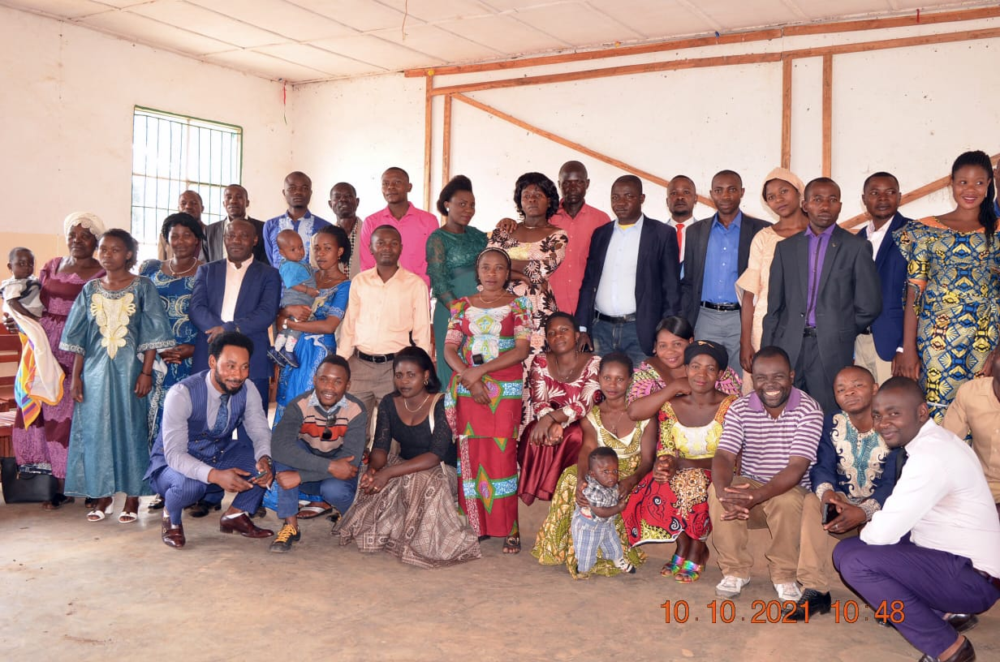
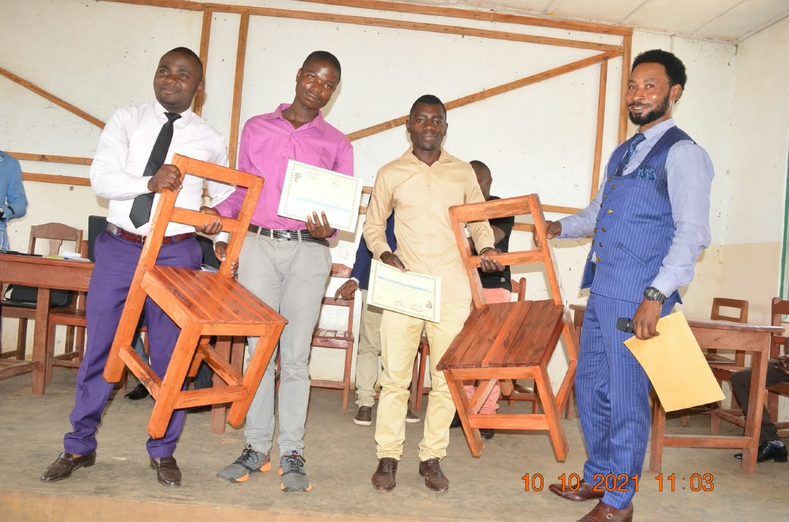
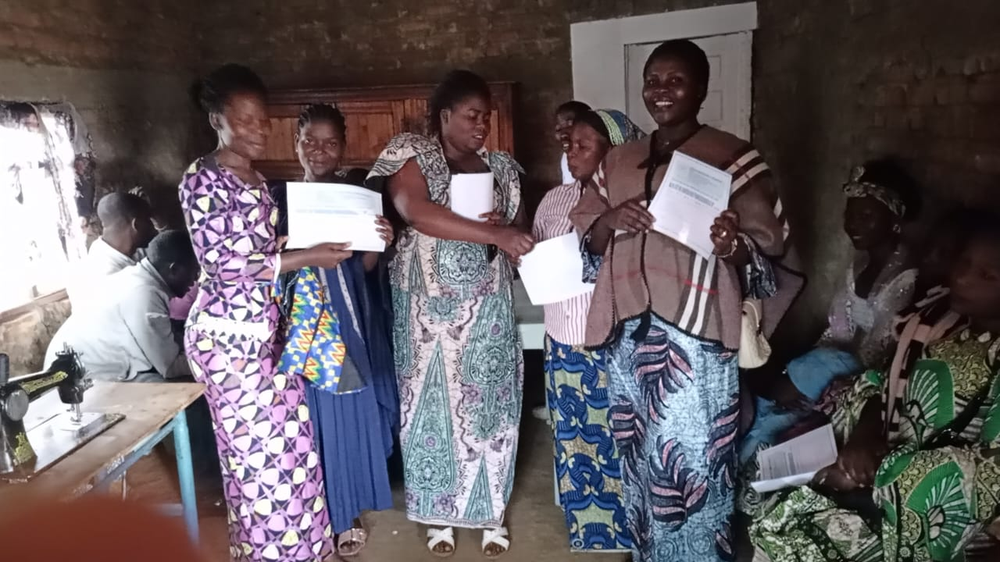
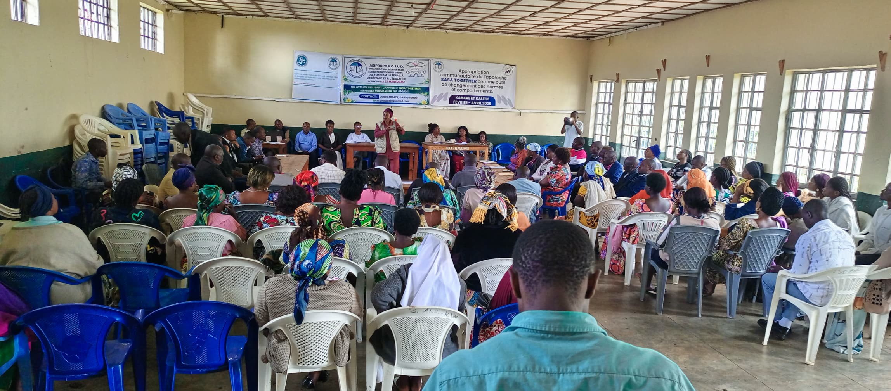
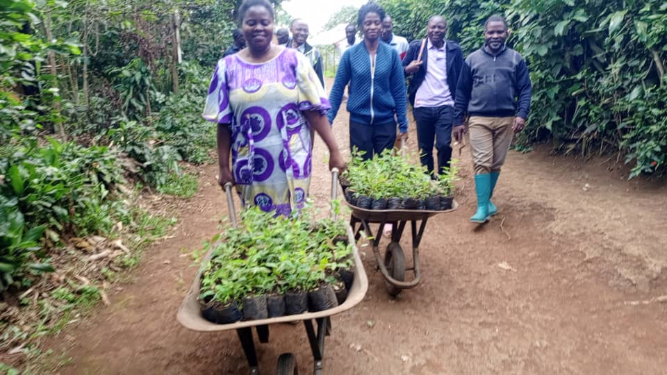
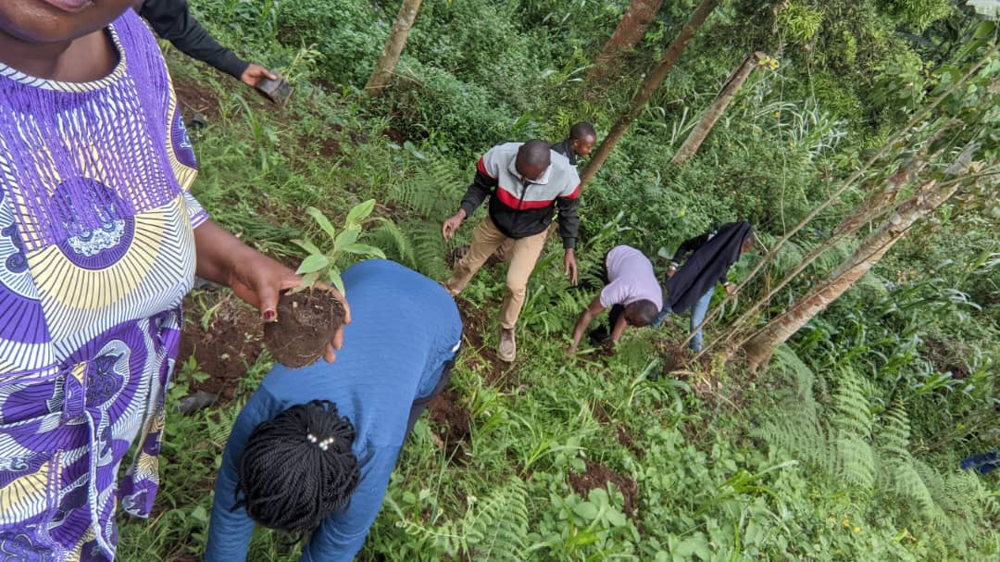
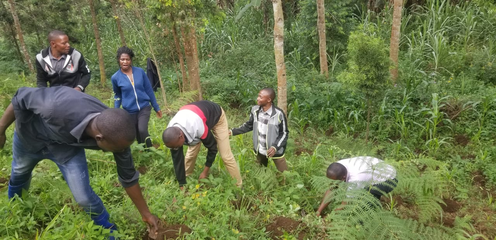

Bienvenue à l'OJUD
Créée le 24 février 2014 à Kavumu Centre, groupement de Bugorhe, territoire de Kabare, province du Sud-Kivu en RDC, l'OJUD est une Association Sans But Lucratif engagée dans la lutte contre la pauvreté et l'autonomisation des couches vulnérables.
Notre Vision
Apporter des solutions pratiques et pérennes pour améliorer les conditions de vie des populations à faible revenu. Nos axes majeurs :
- 🔨Autonomisation économique : Formations professionnelles (menuiserie, coupe-couture) et appui aux activités génératrices de revenus.
- 👥Développement communautaire : Initiatives locales, assemblées générales et encadrement des jeunes.
- 🌳Protection de l'environnement : Campagnes de pépinières et de reboisement pour la préservation de la nature.
- ⚖️Justice sociale : Vulgarisation des droits fonciers et successoraux pour les femmes.
Nos Réalisations & Activités sur le Terrain

Formations en Menuiserie
Remise de brevets et de kits pratiques à nos lauréats formés en menuiserie pour leur insertion professionnelle.

Travaux & Pratique en Atelier
Nos jeunes apprenants en plein exercice pratique de fabrication et de modélisation en menuiserie.

Coupe-Couture & Remise de Brevets
Sessions de formation pratique en coupe-couture axées sur l'autonomisation des femmes et des filles, couronnées par la remise de brevets officiels.

AKIBA / Épargne & Crédit (Femmes)
Mise en place de mutuelles de solidarité et de fonds d'épargne-crédit pour renforcer l'autonomisation financière des femmes de la communauté.

Activités de Crédit Communautaire
Séances de sensibilisation, de suivi et de gestion des cotisations au sein des groupements d'épargne solidaire.

Droits Fonciers & Héritage
Sensibilisation communautaire menée en partenariat avec l'association ASIPROPED sur les droits de la femme et l'accès à l'héritage de la terre.

Services Traiteur & Location de Matériel
Activité phare de l'association : mise à disposition d'ustensiles de cuisine et services traiteur professionnels pour les mariages et diverses cérémonies, soutenant notre autonomie financière.

Campagne de Reboisement
Activités de pépinières et de plantation d'arbres menées sur le terrain pour la protection de l'environnement.

Entretien des Pépinières
Suivi et gestion des jeunes plants forestiers par les membres engagés de l'OJUD.

Mobilisation Environnementale
Participation active de la communauté locale aux actions de reboisement et de lutte contre l'érosion.
Contactez-nous
Siège social : Kavumu Centre (en bas du terrain de football), Groupement de Bugorhe, Territoire de Kabare, Sud-Kivu, RDC.
E-mail : contact@ojudrdc.org / ojudrdc@gmail.com
Téléphone / WhatsApp : +243 852 522 083
Discuter sur WhatsApp